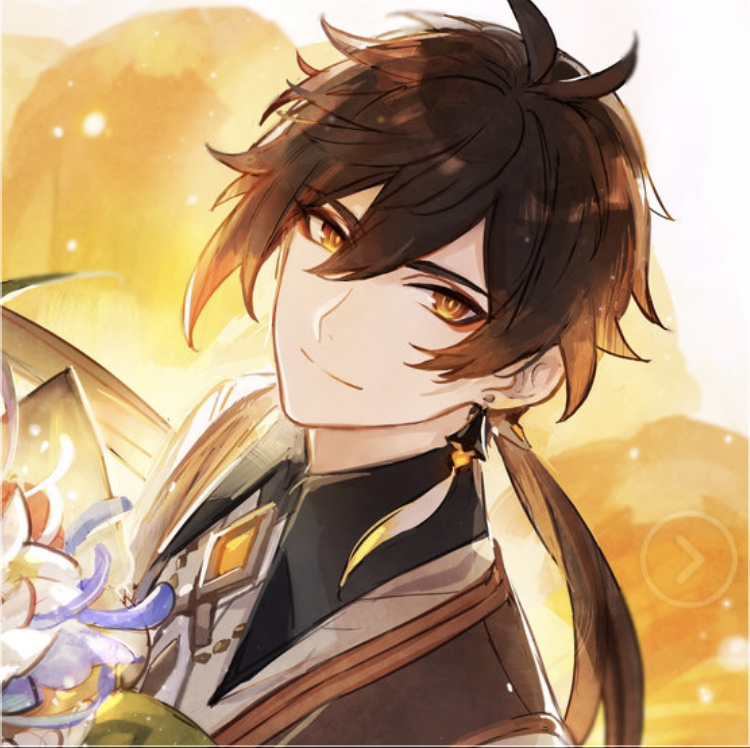

To understand this example, you should open with a phone or tablet
Zhongli (Chinese: 钟离 Zhōnglí) is a playable Geo character in Genshin Impact. He first appears in the Archon Quests Chapter I: Act II - Farewell, the Archaic Lord. He is later revealed to be the current vessel of the Geo Archon, Morax, who has decided to experience the world from the perspective of a mortal. After giving up his Gnosis, he retires from his position as an Archon and returns to his former identity as an Adeptus, although still under the guise of being a human. He currently works as a consultant of the Wangsheng Funeral Parlor.